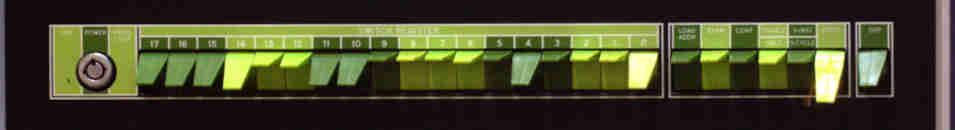

This is Part 5 in the series: Linux on STM32MP135. See other articles.
Arm chips, such as the STM32MP135, implementing the TrustZone extension divide the execution into two worlds: a normal, non-secure world inhabited by the application operating system, and a secure world serviced by a secure OS such as OP-TEE. The ST wiki[1] assures us that OP-TEE is required on all STM32MP1 produces “due to the hardware architecture”. It is our purpose in this article to show that that is not the case: OP-TEE is in fact entirely optional.
The only mechanism to enter the “secure world” is via the SMC instruction
(secure monitor call). This is analogous to how user-space applications invoke
kernel system calls via the SVC (supervisor call) instruction to enter
privileged mode. So long as the kernel does not issue the SMC instruction, the
secure world need never be entered. Thus, we can restate our purpose as removing
all secure monitor calls from the kernel configuration.
The present article is somewhat more involved than the preceding ones in the series. For this reason I offer the “Quick Start” version, where the required modifications to kernel drivers are offered as patches to apply to a particular version. For those interested, the “Theory” section fill in the details. As in other articles, we conclude with a brief discussion.
Start by cloning Buildroot as above. However, this time we check out a different sequence of patches and board files:
$ git clone https://gitlab.com/buildroot.org/buildroot.git
$ git clone git@github.com:js216/stm32mp135_simple.git
$ cd buildroot
$ git checkout 3645e3b781be5cedbb0e667caa70455444ce4552
$ git apply ../stm32mp135_simple/patches/add_falcon.patch
$ cp ../stm32mp135_simple/configs/stm32mp135f_dk_nonsecure_defconfig configs
$ cp -r ../stm32mp135_simple/board/stm32mp135f-dk-nonsecure board/stmicroelectronicsNow build:
$ make stm32mp135f_dk_nonsecure_defconfig
$ makeWrite the generated image to the SD card (either directly with a tool such as
dd, or using the STM32CubeProg as explained
here). Watch it boot up without U-Boot, and without
OP-TEE.
To understand the modifications we are about to do in the next section, we need
to take a closer look at the boot process from TF-A to OP-TEE to Linux. In
particular, we need to explain how secure monitor calls (SMC) calls work; the
use of secure interrupts (FIQ) in OP-TEE; and explain how SCMI clocks work
When Arm Trusted Firmware (TF-A) is done with its own initialization, it loads
several images into memory. In the STM32MP1 case, these are defined in the
array bl2_mem_params_desc in file
plat/st/stm32mp1/plat_bl2_mem_params_desc.c, and include the following:
FW_CONFIG_ID: firmware config, which is mostly just the information on
TrustZone memory regions that is used by TF-A itself
BL32_IMAGE_ID: the OP-TEE executable
BL32_EXTRA1_IMAGE_ID, BL32_EXTRA2_IMAGE_ID, and TOS_FW_CONFIG_ID: some
stuff needed by OP-TEE
BL33_IMAGE_ID: the non-trusted bootloader (U-Boot) or directly Linux itself,
if operating in the “falcon mode”
HW_CONFIG_ID: the Device Tree Blob (DTB) used by U-Boot or Linux, whichever
is run as “BL33”
Just before passing control to OP-TEE, the TF-A prints a couple messages in the
bl2_main() function (bl2/bl2_main.c), and then runs bl2_run_next_image
(bl2/aarch32/bl2_run_next_image.S). There, we disable MMU, put the OP-TEE
entry address into the link register (either lr or lr_svc), load the SPSR
register, and then do an “exception return” to atomically change the program
counter to the link register value, and restore the Current Program Status
Register (CPSR) from the Saved Program Status Register (SPSR).
The ARMv7-A architecture provides optional TrustZone extension, which are implemented on the STM32MP135 chips (as well as the virtualisation extension). In this scheme, the processor is at all times executing in one of two “worlds”, either the secure or the non-secure one.
The NS bit of the
SCR
register defines which world we’re currently in. If NS=1, we are in non-secure
world, otherwise we’re in the secure world. The one exception to this is that
when the processor is running in
Monitor mode;
in that case, the code is executing the secure world and SCR.NS merely
indicates which world the processor was in before entering the Monitor mode.
(The current processor mode is given by the M bits of the
CPSR
register.)
The processor starts execution in the secure world. How do we transition to the
non-secure world? Outside of Monitor mode, Arm does not recommend direct
manipulation of the SCR.NS bit to change from the secure world to the
non-secure world or vice versa. Instead, the right way is to first change into
Monitor mode, flip the SCR.NS bit, and leave monitor mode. To enter Monitor
mode, execute the SMC instruction. This triggers the SMC exception, and the
processor begins executing the SMC handler.
The location of the SMC handler has to be previously stored in the
MVBAR register.
The initial setup required is as follows:
Write a SMC handler. As an example, consult OP-TEE source code, which
provides the handler sm_smc_entry, defined in core/arch/arm/sm/sm_a32.S.
Create a vector table for monitor mode. As specified in the Arm architecture manual, the monitor vector table has eight entries:
Unused
Unused
Secure Monitor Call (SMC) handler
Prefetch Abort handler
Data Abort handler
Unused
IRQ interrupt handler
FIQ interrupt handler
Obviously entry number 3 has to point to the SMC handler defined previously.
For example, OP-TEE defines the following vector table in
core/arch/arm/sm/sm_a32.S:
LOCAL_FUNC sm_vect_table , :, align=32
UNWIND( .cantunwind)
b . /* Reset */
b . /* Undefined instruction */
b sm_smc_entry /* Secure monitor call */
b . /* Prefetch abort */
b . /* Data abort */
b . /* Reserved */
b . /* IRQ */
b sm_fiq_entry /* FIQ */
ENDFUNC smvect_table
We see only the SMC and FIQ handlers are installed, since OP-TEE setup
disables all other Monitor-mode interrupts and exceptions.
Install the vector table to the MVBAR register. The OP-TEE source code
defines the following macros in out/core/include/generated/arm32_sysreg.h:
/* Monitor Vector Base Address Register */
static inline __noprof uint32_t read_mvbar(void)
{
uint32_t v;</code></pre>
asm volatile ("mrc p15, 0, %0, c12, c0, 1" : "=r" (v));
return v;
}
/* Monitor Vector Base Address Register */
static inline __noprof void write_mvbar(uint32_t v)
{
asm volatile ("mcr p15, 0, %0, c12, c0, 1" : : "r" (v));
}
This merely follows the Arm manual on how to access the
MVBAR register.
With this setup in place, to transition from the secure world to the non-secure world, the steps are as follows:
Place the arguments to the SMC handler into registers r0 through r4 (or
as many as are needed by the handler), and execute the SMC instruction. For
example, just before passing control to the non-secure world, OP-TEE
reset_primary function (called from the _start function) does the
following:
mov r4, #0
mov r3, r6
mov r2, r7
mov r1, #0
mov r0, #TEESMC_OPTEED_RETURN_ENTRY_DONE
smc #0This puts the processor into Monitor mode, and it begins execution at the
previously-installed SMC handler. The handler stores secure-mode registers
into some memory location for future use, then sets the SCR.NS bit:
read_scr r0
orr r0, r0, #(SCR_NS | SCR_FIQ) /* Set NS and FIQ bit in SCR */
write_scr r0This also sets the SCR.FIQ bit, which means that FIQ interrupts are also
taken to Monitor mode. In this way, OP-TEE assigns IRQ interrupts to the
non-secure world, and FIQ interrupts to the secure-world. Of course, this
means that the Monitor-mode vector table needs a FIQ handler (as mentioned
in passing above), and the system interrupt handler (GIC on STM32MP135) needs
to be configured to pass “secure” interrupts as FIQ.
After adjusting the stack pointer and restoring the non-secure register values from the stack, the SMC handler returns:
add sp, sp, #(SM_CTX_NSEC + SM_NSEC_CTX_R0)
pop {r0-r7}
rfefd sp!The return location and processor mode is stored on the stack and
automatically retrieved by the rfefd sp! instruction. Of course this means
they have to be previously stored in the right place on the stack; see
sm_smc_entry source code for details.
As mentioned above, OP-TEE code, before returning to non-secure mode, enables
the SCR.FIQ bit, which means that FIQ interrupts get taken to Monitor mode,
serviced by the FIQ handler that is installed in the Monitor-mode vector table
(the table address is stored in the MVBAR register).
As mentioned above, an arbitrary number of system interrupts may be passed as a
FIQ to the processor core. OP-TEE handles these interrupts in itr_handle()
(defined in core/kernel/interrupt.c). The individual interrupt handlers are
stored in a linked list, which itr_handle() traverses until it finds a handler
whose interrupt number (h->it) matches the given interrupt.
For example, the handler for the TZC interrupt (TrustZone memory protection)
is defined in core/arch/arm/plat-stm32mp1/plat_tzc400.c, as the
tzc_it_handler() function.
In general, to configure clocks, Linux uses the
Common Clock Framework. Each
clock needs to define some common operations, such as enable(), disable(),
set_rate(), and so on, as relevant to each particular clock.
Since in the ST-recommended scheme the clock configuration is done entirely in
the secure world, the STM32MP135 clock drivers
(drivers/clk/stm32/clk-strm32mp13.c) make use of the SCMI clock driver
(drivers/clk/clk/scmi.c). The latter provides a translation from the common
clock functions to SCMI functions. For example, enable() is implemented as
follows:
static int scmi_clk_enable(struct clk_hw *hw)
{
struct scmi_clk *clk = to_scmi_clk(hw);
return scmi_proto_clk_ops->enable(clk->ph, clk->id);
}This is just a wrapper around the SCMI clock enable function, as found in the
scmi_proto_clk_ops structure (which contains all the SCMI-protocol clock
operations).
At Linux boot, when the SCMI clock driver is being “probed”, it asks OP-TEE
about the number of supported clocks, and then retrieves information about each
one in sequence. Thus it acquires a list of clocks, with a header file defining
the sequential ID numbers (include/dt-bindings/clock/stm32mp13-clks.h):
/* SCMI clock identifiers */
#define CK_SCMI_HSE 0
#define CK_SCMI_HSI 1
#define CK_SCMI_CSI 2
#define CK_SCMI_LSE 3
#define CK_SCMI_LSI 4
#define CK_SCMI_HSE_DIV2 5
#define CK_SCMI_PLL2_Q 6
#define CK_SCMI_PLL2_R 7
#define CK_SCMI_PLL3_P 8
#define CK_SCMI_PLL3_Q 9
#define CK_SCMI_PLL3_R 10
#define CK_SCMI_PLL4_P 11
#define CK_SCMI_PLL4_Q 12
#define CK_SCMI_PLL4_R 13
#define CK_SCMI_MPU 14
#define CK_SCMI_AXI 15
#define CK_SCMI_MLAHB 16
#define CK_SCMI_CKPER 17
#define CK_SCMI_PCLK1 18
#define CK_SCMI_PCLK2 19
#define CK_SCMI_PCLK3 20
#define CK_SCMI_PCLK4 21
#define CK_SCMI_PCLK5 22
#define CK_SCMI_PCLK6 23
#define CK_SCMI_CKTIMG1 24
#define CK_SCMI_CKTIMG2 25
#define CK_SCMI_CKTIMG3 26
#define CK_SCMI_RTC 27
#define CK_SCMI_RTCAPB 28(There must be some way to ensure that the same sequential number is used in Linux as in OP-TEE, or else the clocks would get confused. Presumably the same header file is used in Linux as in OP-TEE.)
The SCMI clock numbers are then used in device trees. For example, in
core/arch/arm/dts/stm32mp131.dtsi, we see some of these constants being used:
rcc: rcc@50000000 {
compatible = "st,stm32mp13-rcc", "syscon";
reg = <0x50000000 0x1000>;
#clock-cells = <1>;
#reset-cells = <1>;
clock-names = "hse", "hsi", "csi", "lse", "lsi";
clocks = <&scmi_clk CK_SCMI_HSE>,
<&scmi_clk CK_SCMI_HSI>,
<&scmi_clk CK_SCMI_CSI>,
<&scmi_clk CK_SCMI_LSE>,
<&scmi_clk CK_SCMI_LSI>;
};Thus, when the driver compatible with "st,stm32mp13-rcc" (implemented in
drivers/clk/stm32/clk-stm32mp13.c) needs to refer to its "hse" clock, it
calls the scmi_clk and gives it the CK_SCMI_HSE parameter. Recall that
scmi_clk is defined in the same DTSI file, under firmware / scmi:
scmi_clk: protocol@14 {
reg = <0x14>;
#clock-cells = <1>;
};There are some SCMI clocks, however, which are used by the "st,stm32mp13-rcc"
driver, which are not listed in the device tree. For example, in
drivers/clk/stm32/clk-stm32mp13.c we find many definitions such as the
following:
static const char * const sdmmc12_src[] = {
"ck_axi", "pll3_r", "pll4_p", "ck_hsi"
};Here ck_axi, pll3_r, etc., refer to SCMI clocks, but these are not mentioned
in the device tree. How can the kernel find them? The way it works is that
during SCMI clock driver initialization, the driver registers these clocks (and
others as per the listing from the stm32mp13-clks.h header file above). When,
later, the "st,stm32mp13-rcc" driver is being initialized, it is able to refer
to these clocks simply by their name.
This means that the SCMI driver needs to be probed before the RCC driver. To
ensure this, note the following part of the device tree:
rcc: rcc@50000000 {
...
clocks = <&scmi_clk CK_SCMI_HSE>,
<&scmi_clk CK_SCMI_HSI>,
<&scmi_clk CK_SCMI_CSI>,
<&scmi_clk CK_SCMI_LSE>,
<&scmi_clk CK_SCMI_LSI>;
};The reference to SCMI clocks here does not mean that these particular clocks
(HSE, HSI, CSI, LSE, LSI) are used by the RCC driver. Rather, it
ensures that the SCMI clock driver is a dependency of the RCC driver, and gets
initialized first. It would have been much nicer if the device tree RCC node
listed all the clocks that are used by RCC rather than just referring to them
by their name string (such as "pll3_r"), but that’s the way ST implemented
things. In particular, this means that if we unset the CONFIG_COMMON_CLK_SCMI
entry in the kernel configuration, the kernel will no longer boot, without
printing any error message at all; the RCC driver will fail to work properly
since it can no longer refer to many of the clocks it needs by their name
string.
There is no need to understand SCMI clocks further, so long as we can replace
them all with “real” clocks, with registers under direct control of the RCC
driver from the Linux kernel.
STM32MP135 presents an SDK that is, to my mind, overly complicated. To port the setup from the evaluation board to a new board requires the understanding of three bootloaders (ROM, TF-A, U-Boot), two operating systems (Linux, OP-TEE), and a stack of other software. Most of this arose out of a desire to simplify the process; for example, U-Boot aims to be the one universal bootloader in embedded systems, so as to not have to learn a new one for each platform. But the ironic end result is that after piling on so many “simplifications”, the net result is more complicated than having none of them.
The claim that OP-TEE is mandatory probably arises out of a desire to avoid having to maintain two separate development branches, a secure and a non-secure one. This must be even more so considering the need to support the GUI-based configuration utilities (STM32Cube), or the Yocto-based distributions.
However, as a developer I would prefer to be offered a minimal working configuration where OP-TEE would be an “opt-in” configuration, rather than tightly bundling it in with the kernel. Many (most?) applications do not call for secure-world services; these get included only due to the large cost of removing it from the provided SDKs.
09/26/2025: I have made the modifications available in the repository
stm32mp135_simple, as mentioned
in the quick tutorial above. I do not at present have the intention of
upstreaming it, since it would involve a lot of effort updating it to the latest
version of Buildroot (or TF-A and Linux), only to watch it become obsolete again
during the upstreaming process.

Decisions are illusions, especially difficult decisions. In reality, the only choice available is to sit back and watch events unfold; there is only one way in which they will unfold (at least in this universe), and that’s the way things are going to be.
Action must flow out of detachment from the “human” world of “I” and “mine”; it must be free from thoughts of control, achievement, and getting things done. Instead, the mind must be free to operate on the level of the mind, free to go where mind goes. There is no thought of goal as effect; the mind knows what it is doing when allowed so.
This is not passivity but a kind of wu wei—acting without forcing.

This is Part 4 in the series: Linux on STM32MP135. See other articles.
With Qemu, anyone can customize the Linux boot process and run it without the need for custom hardware. In this article, we will adapt a Buildroot defconfig to make TF-A boot Linux and OP-TEE directly without U-Boot.
This approach was suggested by A. Vandecappelle on the Buildroot mailing list[1]. He was correct to point out that it would be interesting to see a Qemu simulation of the “Falcon mode” boot process:
Perhaps it would also be a good idea to add a variant of the qemu defconfigs that tests this option. We can use the
qemu_arm_vexpress_tz_defconfig, drop U-Boot from it, and switch to booting to Linux directly from TF-A.
First, we will look at the “normal” boot process with U-Boot to understand how to remove it. Then, we will provide tutorial-style steps to remove U-Boot from the boot process. Then, we suggest with how to integrate this into Buildroot. We conclude with a discussion of alternative approaches.
In the qemu_arm_vexpress_tz_defconfig defconfig, Qemu is instructed to load
Arm Trusted Firmware (TF-A) as “bios“. Qemu auto-generates a Device Tree Blob
(DTB) and loads it in memory at the start of RAM. As the Qemu
documentation[2] explains:
For guests using the Linux kernel boot protocol (this means any non-ELF file passed to the QEMU
-kerneloption) the address of the DTB is passed in a register (r2for 32-bit guests, orx0for 64-bit guests)
For guests booting as “bare-metal” (any other kind of boot), the DTB is at the start of RAM (
0x4000_0000)
In our case, TF-A is booted in the “bare-metal” mode. We can see in file
plat/qemu/qemu/include/platform_def.h that this is so:
#define PLAT_QEMU_DT_BASE NS_DRAM0_BASETF-A patches the Qemu-provided DTB by inserting the information about the reserved memory addresses used by the secure OS (OP-TEE), as well as the protocol (PSCI) that Linux is to use to communicate with OP-TEE. Then, it passes control to U-Boot.
U-Boot only task in this configuration, as far as I can tell, is to load the initial compressed filesystem image into some range of memory addresses, then patch the DTB with these addresses. Then, it passes control to the Linux kernel.
Linux reads the DTB, either from the address given in register r2 or perhaps
from the pre-defined memory location (not sure). Then, it reads the
initrd-start location from the chosen node, decompresses the filesystem,
locates the init process, and runs it.
Thus to remove U-Boot, we just have to load the initramfs ourselves, and add its address to the DTB. Of course, we must also tell TF-A to not load the U-Boot and instead run Linux directly. In the following section, we explain how to do that.
Obtain Buildroot and check out and build the defconfig that we’re starting from:
$ git clone https://gitlab.com/buildroot.org/buildroot.git --depth=1
$ make qemu_arm_vexpress_tz_defconfig
$ makeThis builds everything and gives the script start_qemu.sh (under
output/images) with the suggested Qemu command line.
Extract the DTB by modifying the Qemu command as follows (note the
dumpdtb=qemu.dtb):
$ qemu-system-arm -machine virt,dumpdtb=qemu.dtb -cpu cortex-a15Uncompile the DTB into the source format so we can edit it:
$ dtc -I dtb -O dts qemu.dtb > new.dtsOpen new.dts in a text editor and modify the chosen node as follows,
adding the location of the initramfs (initrd):
chosen {
linux,initrd-end = <0x00 0x7666e09d>;
linux,initrd-start = <0x00 0x76000040>;
bootargs = "test console=ttyAMA0,115200 earlyprintk=serial,ttyAMA0,115200";
stdout-path = "/pl011@9000000";
};Compile it back into the DTB format:
dtc -I dts -O dtb new.dts > new.dtbOpen make menuconfig and navigate to Bootloaders ---> Arm Trusted Firmware
(ATF). Switch the BL33 to None, and add the following Additional ATF build
variables:
BL33=$(BINARIES_DIR)/zImageExit and save new configuration and rebuild:
$ make arm-trusted-firmware-rebuild
$ makeCheck that output/images contains updated fip.bin, which should be about
5 or 6M in size since it contains the whole kernel rather than just U-Boot.
Run Qemu with the following commands:
$ cd output/images
$ exec qemu-system-arm -machine virt -dtb art.dtb -device \
loader,file=rootfs.cpio.gz,addr=0x76000040 -machine secure=on -cpu \
cortex-a15 -smp 1 -s -m 1024 -d unimp -netdev user,id=vmnic -device \
virtio-net-device,netdev=vmnic -nographic \
-semihosting-config enable=on,target=native -bios flash.binThis is of course just the old command from start-qemu.sh, with the DTB and
initramfs added. With some luck, you should see messages from TF-A directly
transitioning into the ones from the kernel, with no U-Boot in between:
NOTICE: Booting Trusted Firmware
NOTICE: BL1: v2.7(release):v2.7
NOTICE: BL1: Built : 20:55:52, Sep 12 2025
NOTICE: BL1: Booting BL2
NOTICE: BL2: v2.7(release):v2.7
NOTICE: BL2: Built : 20:55:52, Sep 12 2025
NOTICE: BL1: Booting BL32
Booting Linux on physical CPU 0x0
Linux version 6.12.27 (jk@Lutien) (arm-buildroot-linux-gnueabihf-gcc.br_real (Buildroot -g5b6b80bf) 14.3.0, GNU ld (GNU Binutils) 2.43.1) #2 SMP Fri Sep 12 20:03:32 PDT 2025
CPU: ARMv7 Processor [414fc0f0] revision 0 (ARMv7), cr=10c5387d
CPU: div instructions available: patching division code
CPU: PIPT / VIPT nonaliasing data cache, PIPT instruction cache
OF: fdt: Machine model: linux,dummy-virt
OF: fdt: Ignoring memory range 0x40000000 - 0x60000000We saw above that TF-A is happy to boot Linux directly so long as we just point
it to a kernel image for the BL33 executable. It turns out that there we can
find limited support for this use case already in the TF-A source tree via the
ARM_LINUX_KERNEL_AS_BL33 flag.
The flag is specific to a few platforms. For AArch64 on Qemu, the documentation
(docs/plat/qemu.rst, as well as docs/plat/arm/arm-build-options.rst)
explains that the flag makes TF-A pass the Qemu-generated DTB to the kernel via
the x0 register. We see the implementation of it in
plat/qemu/common/qemu_bl2_setup.c (and very similar lines in
plat/arm/common/arm_bl31_setup.c):
#if ARM_LINUX_KERNEL_AS_BL33
/*
* According to the file ``Documentation/arm64/booting.txt`` of
* the Linux kernel tree, Linux expects the physical address of
* the device tree blob (DTB) in x0, while x1-x3 are reserved
* for future use and must be 0.
*/
bl_mem_params->ep_info.args.arg0 =
(u_register_t)ARM_PRELOADED_DTB_BASE;
bl_mem_params->ep_info.args.arg1 = 0U;
bl_mem_params->ep_info.args.arg2 = 0U;
bl_mem_params->ep_info.args.arg3 = 0U;On AArch32, the flag as currently implemented is intended for operation with
SP_MIN. This is clear from the documentation: “for AArch32 `RESET_TO_SP_MIN
must be 1 when using" the ARMLINUXKERNELASBL33 flag
(docs/plat/arm/arm-build-options.rst). The plat/arm/common/arm_common.mk`
Makefile enforces this.
Unfortunately this limits the potential use cases of ARM_LINUX_KERNEL_AS_BL33
to AArch64, or else to AArch32 with SP_MIN enabled. The Buildroot defconfig we
have adapted in the previous section uses OP-TEE instead of SP_MIN, and it is
also possible to use no BL32 at all.
In the tutorial above, we dumped the Qemu DTB and modified it just to add two
lines into the chosen node. The same can be done by TF-A.
The file plat/qemu/common/qemu_bl2_setup.c defines the function update_dt()
which is used for precisely this purpose, updating the DTB with some extra
board-specific details. (In the defconfig, it inserts PSCI nodes.)
We can insert the two chosen lines in the middle of update_dt():
fdt_setprop_u64(fdt, fdt_path_offset(fdt, "/chosen"),
"linux,initrd-start", 0x76000040);
fdt_setprop_u64(fdt, fdt_path_offset(fdt, "/chosen"),
"linux,initrd-end", 0x7666e09d);On recompile, there is no need to manually modify the DTB anymore.
The disadvantage of this approach is that we have to patch TF-A, making our defconfig fragile against future changes in TF-A. It would be better to include that DTB compilation as a post-build script in Buildroot.
Is it practical to assume that the initramfs will be loaded in memory before TF-A even starts executing? Of course not. But on a real embedded platform, such as the setup from the previous article, the root filesystem is the SD card or some other non-volatile storage. There appears to be no good reason to use U-Boot since TF-A can read from these just fine. If, on the other hand, your setup requires some complicated configuration of the root filesystem, possibly involving Ethernet, then U-Boot may well be a good choice. Still, I believe that the best tool for the job is the simplest one that works reliably.
It is also not reasonable to assume that the DTB would be loaded in memory
before TF-A even begins execution. After all, as the only bootloader, it is its
job to load it and point the kernel to where it loaded it. As P. Maydell
explains on the qemu-discuss mailing list[3], providing the -dtb option to
Qemu “overrides the autogenerated file. But generally you shouldn’t do that.”
Instead, the Qemu user should provide the DTB, if emulating real hardware, or
else to have the Qemu
autogenerate the DTB matching whatever it does, like the virt board. This is the unusual case – virt only does this because it is a purely “virtual” board that doesn’t match any real physical hardware and which changes depending on what the user asked for.
For example, on STM32MP1, the TF-A fiptool is used to package the DTB in a
form that TF-A is able to load it in memory using the BL33_CFG flag, as we
have used in previous article.
There may be other ways to load the DTB and initramfs in Qemu, but the one
presented in our tutorial above appears to be the easiest. We could, for
example, modify Qemu to allow using the -initrd command line flag without the
-kernel flag, and emit the DTB with the appropriate address. Or, we could
teach TF-A how to read the initramfs file via the semihosting or virtio
protocols, load it into memory, and modify the DTB accordingly.
However, the tutorial method above works without modifying Qemu or TF-A code. It uses an explicit DTB, as one is likely to do on a physical embedded target. Since it passes the initramfs using an explicit command line option, it avoids hard-coding it into any compiled code.
17/9/2025: first submission of the Qemu defconfig (link)
02/03/2026: response by Thomas Petazzoni (link)
02/04/2026: amended submission as a runtime test (link)
Go through the source of any nontrivial program and chances are, most of the code in there is used very rarely, and a lot if it may never be used. This is the more so if a program is supposed to be very portable, such as in the Linux kernel. Of course, compilers will eliminate it, so there’s no problem?
Compilers are supposed to detect what’s not being used, and remove the code. They don’t do that. For example, processing one “compilation unit” at a time, a C compiler has no idea which functions will be referenced to from other units and which are entirely dead. (If the function is declared static, this does work, so declare as many of them static.)
Surely by the time the linker is invoked, all the function calls are clear and the rest can be stripped away? Also not likely. For example, the function calls could be computed during runtime as casts of integers into function pointers. If the linker were to remove them, this mechanism would fail. So long as several functions are compiled into the same section, the linker will always include all of them so long as at least one of them is used.
What if we instead explicitly mark which things we would like excluded?
With conditional compilation, you can include/exclude whatever you want. When a program has these conditional compilation switches, dead code does get entirely deleted before the compiler even sees it. Most often, the result is a myriad of poorly-documented (more likely: entirely undocumented) switches that you don’t know what you’re allowed to disable.
For example, the Linux kernel provides the amazing menuconfig tool to manage these inclusions and exclusions. Still, it can take days of work trying out disabling and re-enabling things, till you give up and wisely conclude that this “premature optimization” is not worth your time and leave everything turned on as it is by default.
The sad reality of modern scripting languages, and even compiled ones like Rust, is that their robust ecosystems of packages and libraries encourage wholesale inclusion of code whose size is entirely out of proportion to the task they perform. (Don’t even mention shared libraries.)
As an example, let’s try out the popular Rust GUI library egui. According to its Readme, it is modular, so you can use small parts of egui as needed, and comes with “minimal dependencies”. Just what we need to make a tiny app! Okay, first we need Rust itself:
$ curl --proto ‘=https’ --tlsv1.2 -sSf https://sh.rustup.rs | sh
$ du -hs .rustup .cargo
1.3G .rustup
20M .cargoSo far so good—the entire compiler and toolchain fits inside 1.3G, and we start with 20M of packages. Now let’s clone the GUI library and compile its simple example with a couple really simple widgets:
$ git clone git@github.com:emilk/egui.git
$ cd egui/examples/hello_world_simple
$ cargo run -p hello_world_simple
$ cd && du -hs .rustup .cargo
2.6G .rustup
210M .cargoOops! How many gigabytes of code does it take to show a couple characters and rectangles on the screen? Besides, the above took more than 20 min to complete on a machine vastly superior to the Cray-2 supercomputer. The compiled program was 236M in size, or 16M after stripping. Everyday We Stray Further ...
This is far from being a “freak” example; even the simplest tasks in Rust and Python and pretty much anything else considered “modern” will pull in gigabytes of “essential” packages.
Packages get inextricably linked with the main program, resulting in an exponential explosion of complexity (besides the linear growth in size). Once linked, the program and its libraries/packages are no longer separate modules; you cannot simply replace a library for a different one, despite the host of false promises from the OOP crowd.
This is because the interfaces between these modules are very complex: hundreds or thousands of function calls, complex object operations, &c.
The only way I know of that works is to not have dead code to begin with. Extra features should be strictly opt-in, not opt-out. These should be implemented with separate compilation and linking; in other words, each feature is a new program, not a library.
The objection may be raised that we’re advocating an extremely inefficient paradigm, increasing the already significant overhead of function calls with the much greater one of executing new programs. As an “extreme” example, a typical Unix shell will parse each command (with few exceptions) as the name of a new program to execute. How inefficient!?
Maintainable, replaceable code reuse can only happen when the interfaces are well specified and minimal, such as obtain between cooperating independent programs in a Unix pipeline.
The key to problem-solving on the UNIX system is to identify the right primitive operations and to put them at the right place. UNIX programs tend to solve general problems rather than special cases. In a very loose sense, the programs are orthogonal, spanning the space of jobs to be done (although with a fair amount of overlap for reasons of history, convenience or efficiency). Functions are placed where they will do the most good: there shouldn’t be a pager in every program that produces output any more than there should be filename pattern matching in every program that uses filenames.
One thing that UNIX does not need is more features. It is successful in part because it has a small number of good ideas that work well together. Merely adding features does not make it easier for users to do things — it just makes the manual thicker.[1]

This is Part 3 in the series: Linux on STM32MP135. See other articles.
In this article, we use Arm Trusted Firmware (TF-A) to load the Linux kernel directly, without using U-Boot.[1] I have seen the idea of omitting the Secondary Program Loader (SPL) referred to as “falcon mode”, since it makes the boot process (slightly) faster. However, I am primarily interested in it as a way of reducing overall complexity of the software stack.
In this article, we will implement this in two ways. First, we modify the files as needed manually. At the end of the article, we provide an alternative method: directly integrate the changes into Buildroot.
To get started, make sure to have built the default configuration as per the first article of this series. Very briefly, this entails cloning the official Buildroot repository, selecting a defconfig, and compiling:
$ git clone https://gitlab.com/buildroot.org/buildroot.git --depth=1
$ cd buildroot
$ make stm32mp135f_dk_defconfig
$ make menuconfig # add the STM32MP_USB_PROGRAMMER=1 flag to TF-A build
$ makeIt is also recommended to learn how to flash the SD card without removing it via a USB connection, as explained in the second article.
The procedure is pretty simple. All we need to do is to modify some files, adjust some build parameters, recompile, and the new SD card image is ready to test.
Before making any modifications, make a backup of the file containing U-Boot.
$ cd output/images
$ cp fip.bin fip_uboot.binDouble check that the above fip.bin was built using the additional ATF
build variable STM32MP_USB_PROGRAMMER=1, otherwise USB flashing will not
work!
Open flash.tsv, and update the fip.bin to fip_uboot.bin there as well.
(Despite removing U-Boot from the boot process, we are still going to use it to flash the SD card image via USB using the STM32CubeProg.)
Two TF-A files need to be modified, so navigate to the TF-A build directory:
$ cd ../build/arm-trusted-firmware-lts-v2.10.5Since the kernel is much bigger than U-Boot, it takes longer to load. We need
to adjust the SD card reading timeout. In drivers/st/mmc/stm32_sdmmc2.c,
find the line
timeout = timeout_init_us(TIMEOUT_US_1_S);and replace it with
timeout = timeout_init_us(TIMEOUT_US_1_S * 5);Next, we would like to load the kernel deep enough into the memory space so
that relocation of the compressed image is not necessary. In file
plat/st/stm32mp1/stm32mp1_def.h, find the line
#define STM32MP_BL33_BASE STM32MP_DDR_BASEand replace it with
#define STM32MP_BL33_BASE (STM32MP_DDR_BASE + U(0x2008000))Finally, in order to allow loading such a big BL33 as the kernel image, we
adjust the max size. In the same file, find the line
#define STM32MP_BL33_MAX_SIZE U(0x400000)and replace it with
#define STM32MP_BL33_MAX_SIZE U(0x3FF8000)Next, we need to modify a couple build parameters. Open the make menuconfig
and navigate to Bootloaders ---> ARM Trusted Firmware (ATF).
Under BL33, change from U-Boot to None.
Under Additional ATF build variables, make sure that U-Boot is not
present and add the following key-value pairs:
BL33=$(BINARIES_DIR)/zImage BL33_CFG=$(BINARIES_DIR)/stm32mp135f-dk.dtbSelect “Ok” and “Esc” out of the menus, making sure to save the new configuration.
Next, open the file
board/stmicroelectronics/common/stm32mp1xx/genimage.cfg.template and
increase the size of the fip partition, for example:
partition fip {
image = "fip.bin"
size = 8M
}Finally, since U-Boot will no longer be around to pass the Linux command line
arguments, we can instead pass them through the device tree source. Open the
file output/build/linux-6.12.22/arch/arm/boot/dts/st/stm32mp135f-dk.dts
(you may have a different Linux version, just modify the path as appropriate)
and add the bootargs into the chosen section, as follows:
chosen {
stdout-path = "serial0:115200n8";
bootargs = "root=/dev/mmcblk0p4 rootwait";
};Now we can rebuild the TF-A, the device tree blob, and regenerate the SD card image. Thanks to the magic of Buildroot, all it takes is:
$ make linux-rebuild
$ make arm-trusted-firmware-rebuild
$ makeKeep in mind that rebuilding TF-A is needed any time the Linux kernel or DTS
or TF-A sources change, since the kernel gets packaged into the fip by the
TF-A build process. In this case, the first make rebuilds the DTB, the
second packages it in the fip, and the third makes sure it gets into the SD
card.
Set DIP switch to serial boot (press in the upper all of all rockers) and flash to SD card:
$ sudo ~/cube/bin/STM32_Programmer_CLI -c port=usb1 -w output/images/flash.tsvThen reconfigure the DIP switches for SD card boot (press the bottom side of the second rocker switch from the left), and press the black reboot button.
If you watch the serial monitor carefully, you will notice that we transition from TF-A directly to OP-TEE and Linux. Success! No U-Boot in the boot process:
NOTICE: Model: STMicroelectronics STM32MP135F-DK Discovery Board
NOTICE: Board: MB1635 Var1.0 Rev.E-02
NOTICE: BL2: v2.10.5(release):lts-v2.10.5
NOTICE: BL2: Built : 20:58:52, Sep 10 2025
NOTICE: BL2: Booting BL32
I/TC: Early console on UART#4
I/TC:
I/TC: Embedded DTB found
I/TC: OP-TEE version: Unknown_4.3 (gcc version 14.3.0 (Buildroot 2025.08-rc3-87-gbbb0164de0)) #1 Thu Sep 4 03:06:46 UTC 2025 arm
...
(more OP-TEE messages here)
...
[ 0.000000] Booting Linux on physical CPU 0x0
[ 0.000000] Linux version 6.12.22 (jk@Lutien) (arm-buildroot-linux-gnueabihf-gcc.br_real (Buildroot 2025.08-rc3-87-gbbb0164de0) 14.3.0, GNU ld (GNU Binutils) 2.43.1) #1 SMP PREEMPT Wed Sep 3 20:23:46 PDT 2025
[ 0.000000] CPU: ARMv7 Processor [410fc075] revision 5 (ARMv7), cr=10c5387dInstead of following the above instructions, we can automate the build process
by integrating it into Buildroot. To this end, I provide the GitHub repository
stm32mp135_simple that can be
used as follows.
Clone the Buildroot repository. To make the procedure reproducible, let’s start from a fixed commit (latest at the time of this writing):
$ git clone https://gitlab.com/buildroot.org/buildroot.git
$ cd buildroot
$ git checkout 5b6b80bfc5237ab4f4e35c081fdac1376efdd396Obtain this repository with the patches we need. Copy the defconfig and the board-specific files into the Buildroot tree.
$ git clone git@github.com:js216/stm32mp135_simple.git
$ cd buildroot # NOT stm32mp135_simple
$ git apply ../stm32mp135_simple/patches/add_falcon.patch
$ git apply ../stm32mp135_simple/patches/increase_fip.patch
$ cp ../configs/stm32mp135_simple/stm32mp135f_dk_falcon_defconfig configs
$ cp -r ../board/stm32mp135_simple/stm32mp135f-dk-falcon board/stmicroelectronicsBuild as usual, but using the new defconfig:
$ make stm32mp135f_dk_falcon_defconfig
$ makeFlash to the SD card and boot into the new system. You should reach the login prompt exactly as in the default configuration—but without involving U-Boot
To port the “default” STM32MP135 setup[2] to a new board design, one is expected to be comfortable writing and modifying the drivers and device tree sources that work with
Arm Trusted Firmware (Primary Program Loader)
OP-TEE (Trusted Execution Environment)
U-Boot (Secondary Program Loader)
Linux kernel
Buildroot, or, worse, Yocto
That is a tall order for a new embedded developer trying to get started integrating Linux in their products. To make things worse, there is at present almost no literature to be found suggesting that a simpler, saner method exists. Certainly the chip vendors themselves do not encourage it.[3]
With this article, we have began chipping away at the unnecessary complexity. We have removed U-Boot from the boot chain. (We still use it for copying the SD card image via USB. One thing at a time!) Since our goal is to run Linux, the list above gives us a blueprint for the work that remains to be done: get rid of everything that is not Linux.
The software that you do not run is software you do not have to understand, test, debug, maintain, and be responsible for when it breaks down ten years down the line in some deeply embedded application, perhaps in outer space.
19/12/2024: original Buildroot mailing list submission (1/1)
16/12/2025: response by Arnout Vandecappelle (link)
17/9/2025: amended submission (v2 0/2, 1/2, 2/2)
02/04/2026: merged by Thomas Petazzoni as Buildroot commit
8e4c663529d135088c78a9c7f4b59354f19d6580